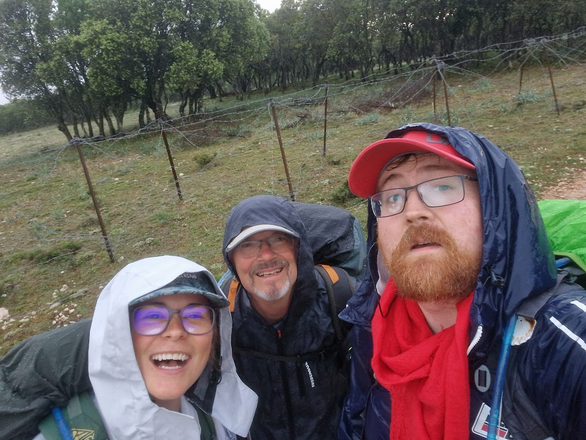
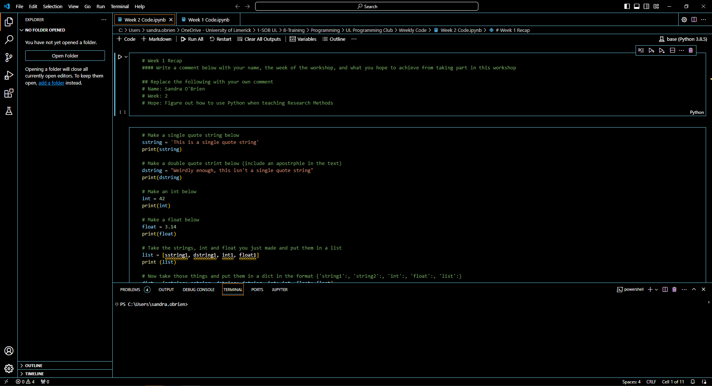
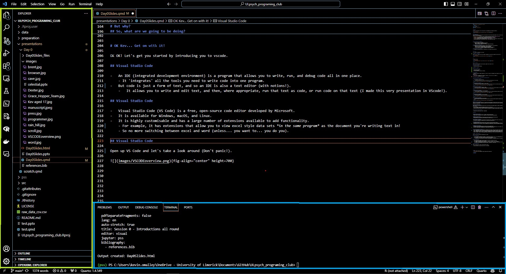
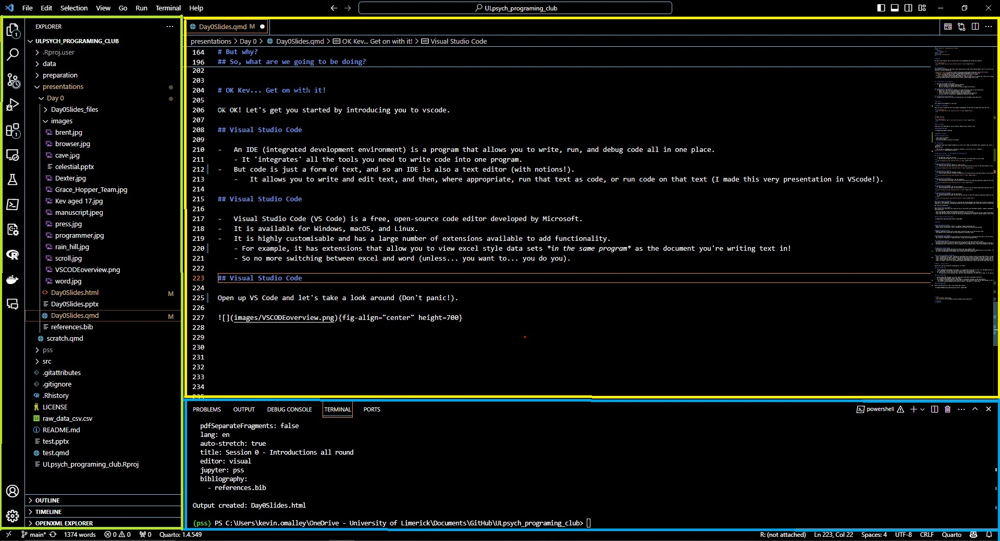
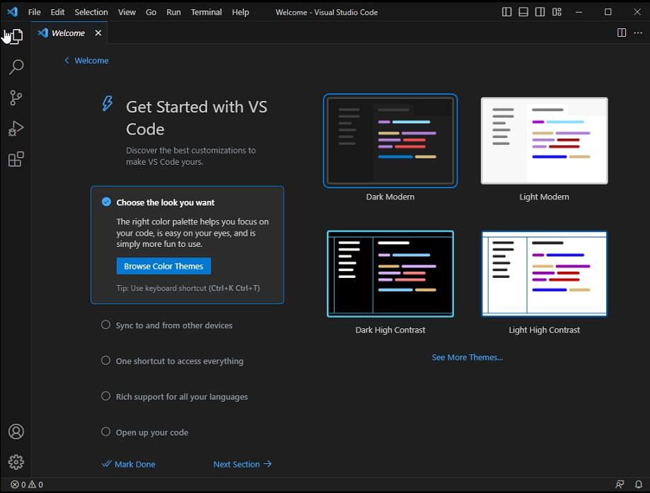
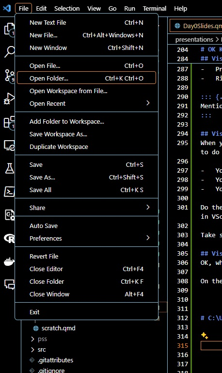
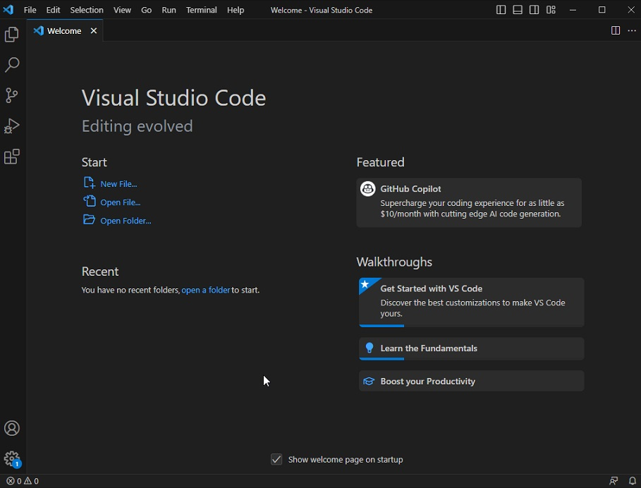
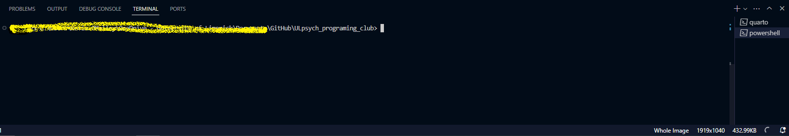

Session 0.0
Introductions all round
Welcome!
My name is Kev O Malley, and I’m the nerd who’ll be accompanying you through this material.

Acknowledgements
This content is building on some other really amazing work by some really amazing people, and I’ll be sure to give them credit as we go along, but just to note that this material is heavily inspired by:
Pandas for everyone (Chen, 2017)
- There’s a second edition of this, I haven’t read it, but I’m sure it’s great!
-
- This is free online and it’s genuinely excellent, they also have intros to python and r which will go deeper than this course.
A deep and abiding hatred of SPSS and MS Word (excel is great though, don’t @ me)
In this session, we’re going to:
- Introduce you to the foundational tools you will use for writing in this summer school:
- VScode (for writing your documents and handling files/folders)
- Quarto (to handle formatting of your documents, headings, references)
- Not Write Code! (That’s tomorrow, once you’re more comfortable)
But first…
Let’s address the elephant(s) in the room.
Elephant 1: Stereotypes
When you think of people who work with computer programming, you may think of people that look like this…
Or maybe like this

But in reality…
These tools were developed by, and are used by, people from all walks of life
- The diversity in the human family should be the cause of love and harmony, as it is in music where many different notes blend together in the making of a perfect chord. (Abdul-Baha, 1938)
Elephant 2: Expectations
You’re very smart, but…
You’re here to learn.
Not to be an expert.
So relax and enjoy the process of learning.
‘…Regard [humanity] as a mine rich in gems of inestimable value. Education can, alone, cause it to reveal its treasures, and enable mankind to benefit therefrom.’ (Baha’u’llah, 19th century)
Elephant 3: But I’m faster with SPSS!
- You have, at this stage years of experience with SPSS and word.
- You’ve (through blood sweat and tears) become very good with it.
- So right now, what takes you 5 minutes in SPSS will take you 20 minutes in code.
- because you’re learning
- But the thing in, once you spend the 20 minutes writing code, you’ll be able to do the same thing in 0.5 seconds next time.
“We are what we repeatedly do. Excellence, therefore, is not an act, but a habit.” (Durant, 1933, paraphrasing Aristotle)
A new way of working
A brief history of documents
- In the beginning, there was the cave.
- And the cave was good, but it was also cold and dark, and really heavy to carry around.
- And the cave was good, but it was also cold and dark, and really heavy to carry around.
A brief history of documents
- Then there was the scroll, of papyrus or linen or hide.
- And the scroll was good, but it was also really fragile and hard to write on (and really heavy to carry around).
- And the scroll was good, but it was also really fragile and hard to write on (and really heavy to carry around).
A brief history of documents
- Then there was the codex, of parchment or paper.
- And the codex was good, illumined with beautiful art by monks and nuns (and really heavy to carry around).

- And the codex was good, illumined with beautiful art by monks and nuns (and really heavy to carry around).
A brief history of documents
- Then there was the printing press, and the typesetter.
- And the books were good , but the machinery was hard to use requiring significant expertise (and really heavy to carry around).
- And the books were good , but the machinery was hard to use requiring significant expertise (and really heavy to carry around).
A brief history of documents
- Then there was the computer, and the word processor.
- And the documents were good, but the software was hard to use and required significant expertise (and really heavy to carry around).
- And the documents were good, but the software was hard to use and required significant expertise (and really heavy to carry around).
A brief history of documents
- Then there was the internet, and the web browser.
- And the documents were good, but the text was difficult to parse and required significant expertise (but the documents were really easy to carry around… maybe too easy).
- And the documents were good, but the text was difficult to parse and required significant expertise (but the documents were really easy to carry around… maybe too easy).
A brief history of documents
With each of these advances, the process of creating and sharing documents has become somewhat more accessible, but this means that each person has to have a wider range of expertise to produce the kinds of documents that are expected these days. Not just writing, but typesetting, graphic design etc.
A brief history of documents
While writers and researchers were using the tools of the printer and the graphic designer, computer programmers were developing tools to help them write and share their work more effectively.
- Tools like the IDE (integrated development environment) for writing text.
- Tools like Markdown, quarto, and restructured text to allow you to just write and not worry about the formatting.
- Tools like the version control system for sharing and collaborating on documents (without having to email them back and forth).
So you can focus on the writing and the thinking and let the computer do the tedious and error prone stuff.

But why?
Running Code with a Mouse
- Every click and action with a mouse on a computer triggers underlying code.
- Simple actions like opening a file or copying text are coded instructions being executed.
Repetition and Efficiency
- Manually repeating an action with a mouse means running the same set of code multiple times.
- This approach can be inefficient and time-consuming for repetitive tasks.
Writing Code for Automation
- By writing code instead, you can specify the instructions once, including how many times an action should be repeated.
- This allows for automation of repetitive tasks, saving time and reducing errors.
- You can solve a problem once, and then apply that solution to many similar problems.
Leveraging Existing Code
- You don’t always have to write code from scratch; you can use code that others have written.
- Libraries and scripts created by others can be applied to your specific needs, making complex operations simpler and more efficient.
- And meaning you don’t have to do it (let the computer set the heading levels, format the references, and tables!)
Empowerment through Coding
- Learning to write or modify code gives you control over your computer tasks.
- It transforms repetitive manual actions into efficient automated processes, empowering you to work smarter, not harder.
- You have a limited number of heartbeats, don’t waste them on the boring stuff.
OK Kev… Get on with it!
So, what are we going to be doing?
- Day 0: Introductions all round - getting you comfortable with writing in quarto using vscode (there’s no code today, just writing).
- Day 1: Introduction to Python - getting you comfortable with the basics of python (where you’ll learn why yesterday was called ‘Day 0’).
- Day 2: Python functions and libraries - getting you comfortable with using python to do data analysis and visualisation.
- Day 3: Introducing you to R, Setting up projects and working with quarto
- Day 4: Setting up a project in Python writing a methods and results section in quarto
How are we going to do it?
- Working together in teams.
- Supporting each other and learning from each other.
- Learning by doing.
- Taking low-stakes quizzes.
- practicing recall and application of concepts.
Let’s get you started by introducing you to vscode.
Visual Studio Code
- An IDE (integrated development environment) is a program that allows you to write, run, and debug code all in one place.
- It ‘integrates’ all the tools you need to write code into one program.
- But code is just a form of text, and so an IDE is also a text editor (with notions!).
- It allows you to write and edit text, and then, where appropriate, run that text as code, or run code on that text (I made this very presentation in VScode!).
Visual Studio Code
- Visual Studio Code (VS Code) is a free, open-source code editor developed by Microsoft.
- It is available for Windows, macOS, and Linux.
- It is highly customisable and has a large number of extensions available to add functionality.
- For example, it has extensions that allow you to view excel style data sets in the same program as the document you’re writing text in!
- So no more switching between excel and word (unless… you want to… you do you).
Visual Studio Code
Open up VS Code and let’s take a look around (Don’t panic!).

Visual Studio Code

Visual Studio Code
- The left-hand side of the window is the activity bar.
- It contains icons for the different views and panels in VS Code.
- You can click on these icons to switch between views.
- The main one you’ll use is the ‘explorer’ icon, top of the activity bar, which will show you the files and folders in your project.
Visual Studio Code

Visual Studio Code
- The bottom panel is the terminal.
- This is where you can run commands and see the output of those commands.
- You can also run your code here.
- You can open the terminal by clicking on the ‘terminal’ icon in the bar along the top of the VScode window.
Visual Studio Code

Visual Studio Code
- The largest panel is the editor.
- This is where you write your code and text.
- But it’s also like a browser, you can have multiple tabs open at once, and different types of files
- You can split the editor into multiple panes to allow for previews, to view your data while you work, or even compare different parts of the same document!
Visual Studio Code
OK so that’s the basic layout of VScode, but there’s a lot more to it than that, and we’ll be exploring it as we go along. For the next little while we’re just going to focus on the editor (cause that’s where you’ll be spending most of your time), with just a little bit about the explorer and the terminal.
Open up VS Code and lets jump in.
Visual Studio Code
To open VScode you can either:
- Click on the icon on your desktop or in your start menu.
- Press the windows key and type ‘vscode’ or ‘code’ and press enter.
- On a mac, you can press
cmd+spaceand type ‘vscode’ and press enter.
- On a mac, you can press
- Or you can right click on the ‘PSS 2024’ folder in the address ‘C:\Users\Public\PSS 2024’ and select ‘open with code’.
- This is the one I want you to do.
Visual Studio Code

When you open VScode for the first time, you’ll see a welcome screen, this gives you some options for how you want VScode to look and feel, and some options for what you want to do with it.
Visual Studio Code
- You can choose a theme (light or dark).
- You can choose a colour scheme.
- You can choose a font.
Visual Studio Code
Do these choices matter? Not really so don’t stress. They are aesthetic choices, and you can change them at any time, but they’re there because you’ll be spending a lot of time in VScode and you should be comforatble there.
- Take some time and look around the screen, I’ll be walking around to make sure that you see everything.
- Try out the different themes, and see what you like.
- When you’re ready click on the little blue ‘welcome’ button in the top left of the window to move on.
Visual Studio Code
OK, when you’ve selected a theme, and clicked on the ‘welcome’ button you’ll see a different welcome screen. Click on the ‘file’ button in the top left of the window, and then click on ‘open folder’.
 
Visual Studio Code
On the computer you’re using there is a folder called ‘PSS 2024’ at the address:
“C:\Users\Public\Documents\PSS 2024”
Visual Studio Code

Select that folder and click ‘open’.
Visual Studio Code
If it’s the first time you’ve selected or opened this folder (or a subfolder of it), you’ll see a message asking if you ‘Trust the authors of the folder’.

Click ‘Yes, I trust the authors’ (because you do, right?).
Visual Studio Code
- You should now see the ‘explorer’ view in the activity bar on the left of the window, and a list of files and folders in the ‘PSS 2024’ folder.
- You need to go to brightspace and download the file called ‘example.qmd’ and save it in the ‘PSS 2024’ folder.
- Take your time, and let me know if you need any help.
- Once you’ve saved the file into the folder, you should see it in the ‘explorer’ view in VScode.
Lets open that file and introduce you to your new best friend, the quarto markdown document!
Quarto
What is quarto?
- Quarto is a piece of software that works “under the hood” in your IDE (VScode in our case) to allow you to:
- Write documents in a simple, plain text format.
- Format those documents using a simple syntax.
- Include code (for data analysis for example) and the output of that code in your documents.
- Include references and citations in your documents.
- Include tables and images in your documents.
- And much more!
Why am Quarto?
- Quarto was developed (essentially) by the scientific community to allow researchers to take advantage of modern work flow:
- To allow remove the tedium of working formatting documents by hand.
- To not have to care about what the document will look like while you’re writing.
- To allow you to analyse your data and write about it in the same place.
In the links for this presentation you’ll find wider info about quarto, but for now, let’s just get you started.
Quarto Documents
Quarto documents are essentially plain text with some extra syntax added in to tell the computer how to format the document.
Plain Textis just that, plain. It’s like the text you type in a text message, or an email without any formatting.Syntaxis the set of rules that govern how the computer will interpret various symbols that you put into theplain textto tell the computer how to format it.
There are lots of resources to help you learn the quarto syntax, and indeed there are lots of resources to help you learn the syntax of other similar tools, but we’re going to focus on the basics for now.
Quarto Documents
The Basics
- Quarto documents are written in
markdown(a type ofplain text). - They have a
.qmdfile extension (but other kinds of files like.ipynband.rmdcan be used too). - They have a
yamlheader at the top of the file (which is where you tell the computer how to format the document).- It’s where we put things like the author and title, but also the format that we want the document to ‘render to’.
- They use really simple symbols to indicate things like headings, lists, italics, bold, images, and links.
Quarto Documents
markdown basics : Headings.
Headings are indicated by a # symbol at the start of a line.
---
title: "example.qmd"
author: "pfft, some nerd"
---
# This is a level 1 heading
It's at the top of the document and is the largest heading.
## This is a level 2 heading
It's a little smaller and is used to indicate a new section.
### This is a level 3 heading
It's a little smaller again and is used to indicate a new subsection.This is a level 1 heading
It’s at the top of the document and is the largest heading.
This is a level 2 heading
It’s a little smaller and is used to indicate a new section.
This is a level 3 heading
It’s a little smaller again and is used to indicate a new subsection.
Quarto Documents
markdown basics : Headings.
---
title: "example.qmd"
author: "pfft, some nerd"
---
# This is a level 1 heading
It's at the top of the document and is the largest heading.
## This is a level 2 heading
It's a little smaller and is used to indicate a new section.
### This is a level 3 heading
It's a little smaller again and is used to indicate a new subsection.Quarto Documents
markdown basics : Bold and Italics.
Markdown uses * (the star symbol, shift+8) and _ (the underline symbol, shift+-) to indicate bold and italics.
Quarto Documents
Italics
This is in italics
This is also in italics
Bold
This is in bold
This is also in bold
Bold and Italics
This is in bold and italics
Quarto Documents
markdown basics : Lists
Markdown supports both numbered (ordered) and unnumbered (unordered) lists.
It’s straightforward to create them using numbers for ordered lists and dashes or asterisks for unordered lists.
Quarto Documents
markdown basics : Lists
Numbered Lists
- First item
- Second item
- Sub item
- Third item
Unnumbered Lists
- First item
- Second item
- Sub item
- Sub item 2
- Third item
Quarto Documents
markdown basics : Links
Creating hyperlinks in Markdown is simple.
You enclose the link text in square brackets and the URL in parentheses immediately after the text.
Quarto Documents
markdown basics : Links
Example Links
Quarto Documents
markdown basics : Recap
---
title: "example.qmd"
author: "pfft, some nerd"
---
<<I've skipped the level 1 heading>>
## This is a level 2 heading
*This text is in italics*
**This text is in bold**
***This text is in bold and italics***
### Numbered Lists
1. First item
2. Second item
- Sub item
### Unnumbered Lists
- First item
- Second item
1. Sub item
2. Sub item 2
[Link to the Quarto website](https://quarto.org)Quarto Practice
OK that’s the basics of markdown, and the basics of quarto, but it’s a lot. Let’s take a few minutes to practice.
Rather than editing the example.qmd file, let’s create a new file to practice in.
- If you hover over the ‘explorer’ area on the left of the window, you’ll see a little icon that looks like a piece of paper with a plus sign on it. Click on that to create a new file.
- Type
intentions.qmdinto the box that pops up and press enter. (Yay!! You now know how to create a new file in VScode!)
Quarto Practice
- In this new document using the markdown syntax we’ve just learned, write a few paragraphs about your intentions for the summer school.
- What do you hope to learn?
- Is there a particular project you might use this knowledge for?
- What are you most excited about?
- What are you most nervous about?
- Look around for a website that you think might be useful to you, and include a link to it in your document.
Unless you share it no one else will be able to see that file, so don’t worry about what you write.
When you want to save what you’ve written, just press ctrl+s (or cmd+s on a mac).
Quarto: Rendering and Previewing
- The computer uses the
syntaxto format theplain textinto apretty document. - This process is called
rendering(you’ve heard me say that already). - You can
renderyour document at any time to see what it looks like. - You can also
previewyour document in a separate window to see what it looks like.
Quarto: Rendering and Previewing
This is the first time we’ll use the terminal in VScode, and it’s really simple. - Click on the terminal icon in the bar along the top of the VScode window. - Click ‘new terminal’ from the menu that pops up.
You should see a new panel open at the bottom of the window. This is the terminal.

Rendering and Previewing
And now we just need to use the terminal to tell Quarto to render our document.
Now these commands can be really really complex, so you’re really going to have to pay attention here.
Rendering and Previewing
Seriously, it’s really complex.
Rendering and Previewing
Actually… maybe you’re not ready for this yet.
Rendering and Previewing
Oh OK.
- It’s
quarto renderfollowed by the (full)name of the file you want to render- (in this case
intentions.qmd).
- (in this case
You OK?
Rendering and Previewing
You can also preview your document in a separate window to see what it looks like.
- Every time you save the document, the preview will update to show you what the document looks like.
- Do that now, try to make a change to your document, save it (ctrl+s), and then see how the preview updates to show you the change.
Well Done!
Summary
- We’ve introduced you to the tools you’ll be using to write your documents and handle your files and folders.
- We’ve introduced you to the basics of VScode.
- We’ve introduced you to the basics of markdown and quarto.
- We’ve introduced you to the basics of rendering and previewing your documents.
And you nailed it!
- You’ve created a new file in VScode.
- You’ve written a document in markdown.
- You’ve rendered and previewed your document.
Quiz time!
If you go to the brightspace site (we’ve added you all to the course), you’ll find a quiz there that will help you to remember what we’ve covered in this session.
The quiz is called ‘Session 0.0’ and it’s just a few questions to help you remember what we’ve covered today.
YOU ARE NOT BEING GRADED ON THIS QUIZ!
It’s just another form of practice to help you remember what we’ve covered today.
Next bits
- Before you take a well deserved break, make another new file in VScode.
- Call this file
exemplar.qmd. - This is where you’ll be working in the next session after the break.
- All you need to do in this file is:
- Write a level 1 heading with the name of someone you really admire (preferably someone you can research online, so not a family member).
- Write a list of 5 things you admire about them.
- Include a link to a website about them.
And that’s it!
Thanks for your attention, and I’ll see you in the next session.